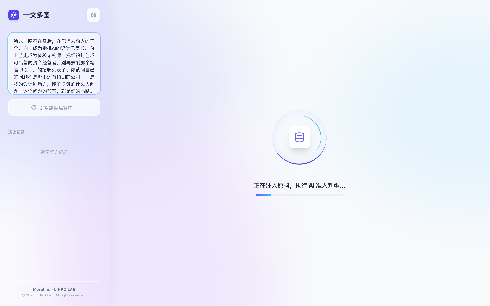
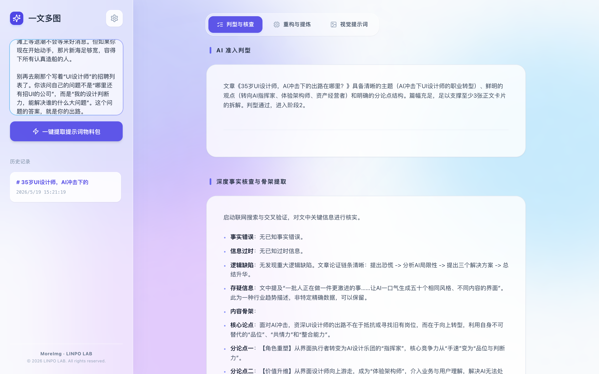
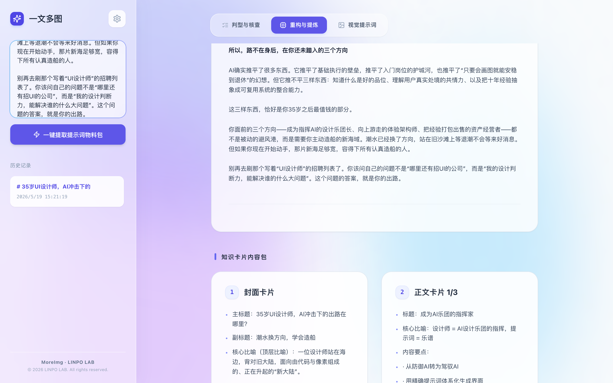
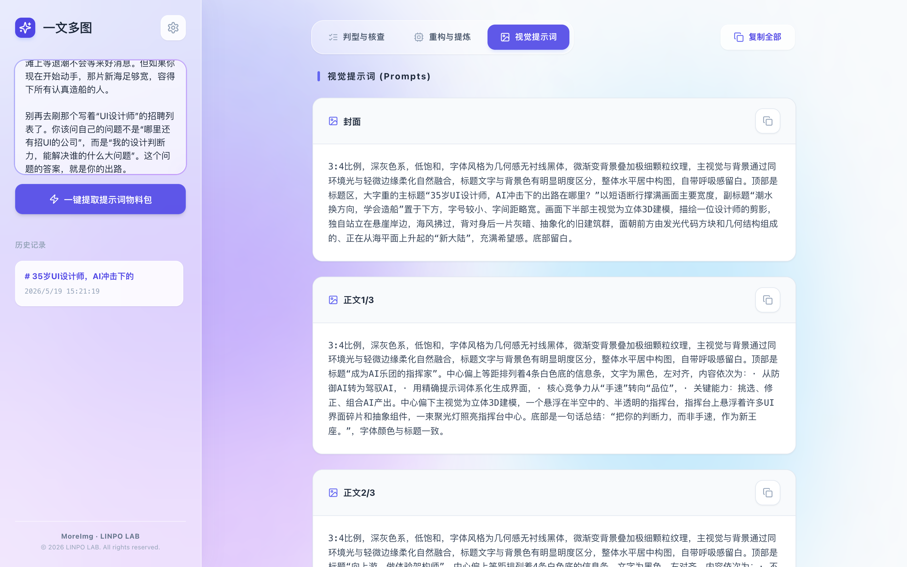

一篇观点和结构完整的中文长文。
01 / 实验速览
先分清内容与视觉责任，再讨论生成多少图片。
卡片内容规格与对应的中文视觉提示词。
真实 API、历史记录和复制入口已跑通。
模型输出仍需人工审查，提示词不等于图片。
02 / 界面证据
从进入处理到视觉提示词，四张截图按生产顺序展开。
真实截图证明工作流已运行，不证明事实、审美或后续图像模型会自动正确。
提交文章后立即进入可见的 AI 分阶段处理
页面保留原文、历史任务和当前处理状态，让等待过程有明确反馈。

判型与核查先暴露文章事实与风险
适合拆卡的内容、待核查点和阶段结果在同一界面呈现。

文章重构与卡片内容包可以分别检查
顺序、标题、要点和不可误读关系先在内容层被固定。

视觉提示词与每张卡片一一对应
构图、色彩和字体气质作为独立产物，不反向改写卡片事实。

03 / 运行边界
流程可以生成提示词包，但不会直接生成最终图片。
当前可以验证
文章输入、六阶段处理、内容规格和提示词输出能否形成闭环。
运行依赖
流程依赖模型接口和下游生图服务。最终图片仍需人工验收文字与构图，当前浏览器只保存本地配置和记录。
当前不验证
不验证事实绝对正确、实际出图质量、自动发布和团队密钥管理。
04 / 工作流程
六个阶段把长文变成可检查的视觉生产规格。
01 · 判型判断文章是否适合拆卡。
02 · 骨架提取观点与内容结构。
03 · 重构整理主线和表达。
04 · 内容包固定页序、标题与要点。
05 · 提示词生成对应视觉指令。
06 · 质检检查内容和提示词对应。
系统与数据决策
API 配置和历史记录保存在当前浏览器。本地服务只解决同源 CORS，不承担团队数据与密钥管理。
05 / 实验结论
内容到提示词的双层产物闭环已经成立。
已成立
真实文章可以先形成卡片内容规格，再生成对应且可复制的视觉提示词。
仍薄弱
模型格式、事实审查、公开部署和下游出图质量仍需独立保障。